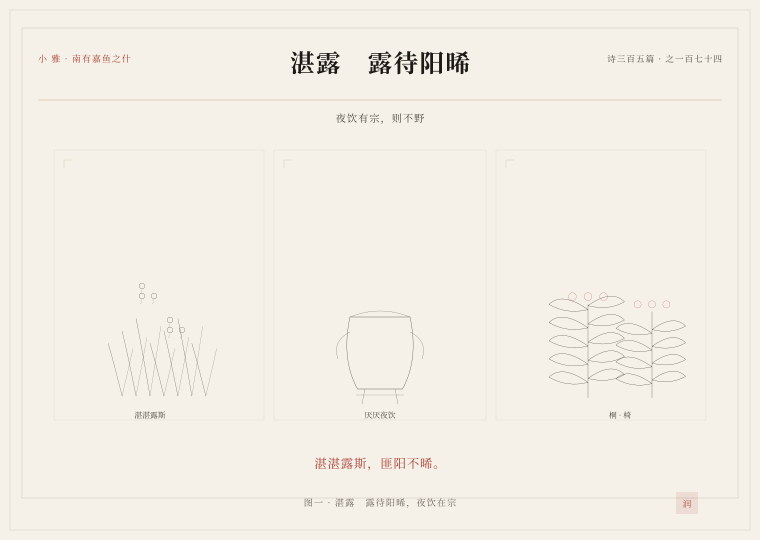
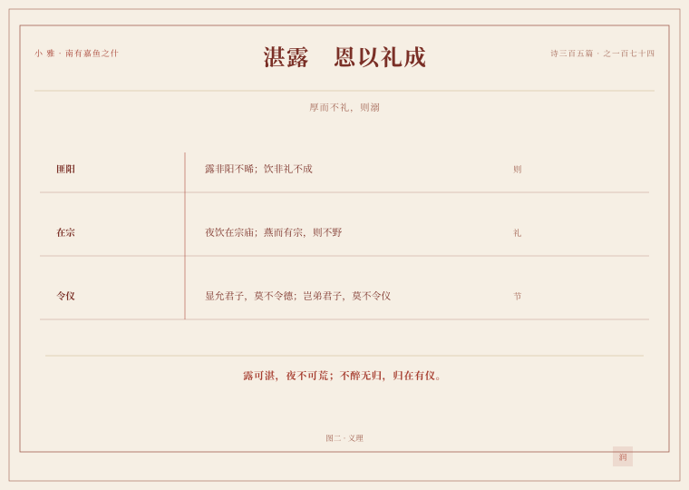

第一百七十四篇 湛露
小雅 · 南有嘉鱼之什 SJ174
朗读 · 普通话
依经文原文朗读，章次不读出；配古琴底乐，不改速、不加拖腔。全库同一音色（豆包 TTS），非播音员录制。
一 解题
诗三判：
- 谁在说：天子燕诸侯之诗。露湛湛，非阳不晞；夜饮厌厌，不醉无归。
- 说什么事：四章。前二章写夜饮，三章写杞棘与令德，四章写桐椅与令仪。
- 为何编在此：蓼萧泽及四海，湛露燕诸侯；泽及者广，燕者亲。
小雅由泽入礼。
《毛序》：「《湛露》，天子燕诸侯也。」
朱子《诗集传》：「兴也。湛湛，露盛貌。阳，日也。晞，干也。厌厌，安也。夜饮，燕饮也。宗，宗庙也。考，成也。」三章：「杞棘，二木。显允，明信也。令德，美德也。」四章：「桐椅，二木。离离，垂也。令仪，美仪也。」
本库的看法：《湛露》不是一首劝酒诗，是一首「以露待阳喻饮待礼」的诗。
露不待阳不干，饮不待礼不成；夜饮而「不醉无归」，是恩；然三章忽说「莫不令德」，四章忽说「莫不令仪」：恩到极处，礼来收束。
须辨：湛湛是露盛，不是湛蓝；厌厌是安闲，不是厌恶；宗是宗庙，不是宗族；考是成，不是考试；离离是果实下垂，不是离别。断语：露可湛，夜不可荒；不醉无归，归在有仪。
先辨五事：「湛湛」是露盛，不是湛蓝；「厌厌」是安闲，不是厌恶；「宗」是宗庙，不是宗族；「考」是成，不是考试；「离离」是果实下垂，不是离别。
二 经文
第一章
湛湛露斯，匪阳不晞。厌厌夜饮，不醉无归。
第二章
湛湛露斯，在彼丰草。厌厌夜饮，在宗载考。
第三章
湛湛露斯，在彼杞棘。显允君子，莫不令德。
第四章
其桐其椅，其实离离。岂弟君子，莫不令仪。
三 韵读
- 一章：露、晞、饮、归，微、脂相叶。声清。
- 二章：露、草、饮、考，幽、之相叶。声厚。
- 三章：露、棘、子、德，职部相叶。声严。
- 四章：椅、离、子、仪，歌、支相叶。声和。
读法：一章「匪阳不晞」是理，二章「在宗载考」是礼，三章「令德」是内，四章「令仪」是外。由理入礼，由内入外，四章如四面。
四 字义与名物
- 湛湛：露盛。斯：语助。匪：非。阳：日。晞：干。厌厌：安闲。夜饮：夜宴。不醉无归：不尽欢不归。
- 丰草：茂草。宗：宗庙。载：语助。考：成。
- 杞棘：枸杞与棘。显允：明信。君子：诸侯。令德：美德。
- 桐椅：桐树与椅树。其实：其果实。离离：下垂。岂弟：和乐平易。令仪：美仪。
五 今译
一章：湛湛的露，不是太阳不干。安闲的夜饮，不醉不归。
二章：湛湛的露，在那茂草上。安闲的夜饮，在宗庙成礼。
三章：湛湛的露，在那枸杞与棘上。明信的君子，没有不具美德的。
四章：那桐树与椅树，果实垂垂。和乐的君子，没有不具美仪的。
六 章旨
- 一章：露待阳，是「自然之则」；饮待醉，是「燕之尽」；不醉无归，是恩。
- 二章：露在丰草，是「泽及」；饮在宗庙，是「礼成」；夜饮有宗，则不野。
- 三章：露在杞棘，是「泽及有刺」；令德，是「内正」；虽燕，不失德。
- 四章：桐椅离离，是「实成」；令仪，是「外正」；德内仪外，燕礼乃全。
七 诗教
- 恩以礼成：不醉无归，是天子之厚；然厚而不礼，则溺；「令德」「令仪」是厚之节。
- 泽及有刺：杞棘有刺，露亦及之；泽不择人，礼能化人。
- 仪不是饰：令仪由岂弟出，不是外饰；无德之仪，是伪。
八 分寸与边界
- 不把「湛湛」读成湛蓝：湛湛是露盛；读成色，则露成天。
- 不把「厌厌」读成厌恶：厌厌是安闲；读成厌，则夜饮成苦。
- 不把「宗」读成宗族：宗是宗庙；读成族，则「载考」无礼。
- 不把「考」读成考试：考是成；读成考，则宗庙成考场。
- 不把「离离」读成离别：离离是果实下垂；读成别，则桐椅成离人。
九 存疑
- 诗旨：毛序「天子燕诸侯」，朱子从之；一说「燕同姓」。本库从燕诸侯。
- 「宗」：毛传「宗，宗庙也」；从宗庙。
- 「考」：毛传「成也」；从成。
- 「岂弟」：毛传「乐易也」；从和乐平易。
十 跨典
- 《诗经·小雅·蓼萧》「零露」；此篇「湛露」，同以露喻泽。
- 《礼记·燕义》「燕礼者，所以明君臣之义也」；此篇夜饮而令德令仪，是燕义。
- 《论语》「礼之用，和为贵」；此篇恩与礼并，是和而节。
十一 双卡与图
六对：
| 湛湛（露盛） |
湛湛（湛蓝） |
| 厌厌（安闲） |
厌厌（厌恶） |
| 宗（宗庙） |
宗（宗族） |
| 考（成） |
考（考试） |
| 离离（果垂） |
离离（离别） |
| 令仪（美仪） |
令仪（令旗） |

图一 · 湛露 露待阳晞，夜饮在宗

图二 · 湛露 令德令仪，恩以礼成